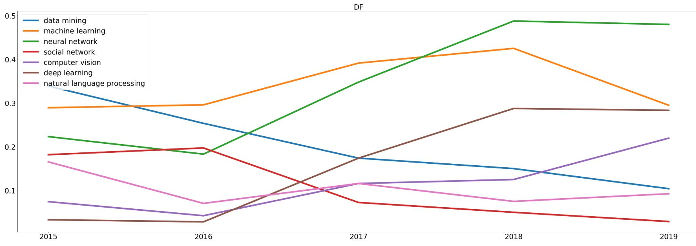
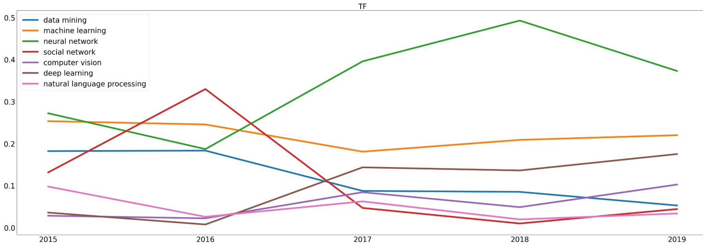

TAAI Academic Search Engine

一、介紹
這是一個專門為中華民國人工智慧學會所做的論文搜尋引擎
二、 起源
中華民國人工智慧學會的國內會議論文，經過多年會消失不見，因此希望建立一個論文搜尋引擎，能夠保存會議的論文和開放讓大家能搜尋到並且下載。
三、功能
可以透過keyword、author、論文title 、year做搜尋，搜尋後的結果可以選擇Relevancy(相關度由高到低)、Recency (年分從近到舊)、Views(點擊率從高到低 )做排序，會顯示總搜尋結果，每十個資料為一頁；首頁會出現前十個點擊率較高的論文。
四、歷年資料分析
Documentary frequency

Term frequency
